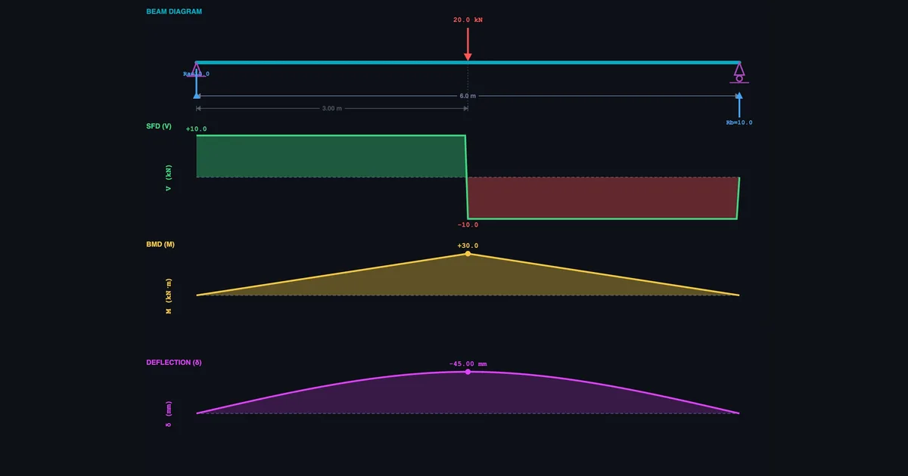
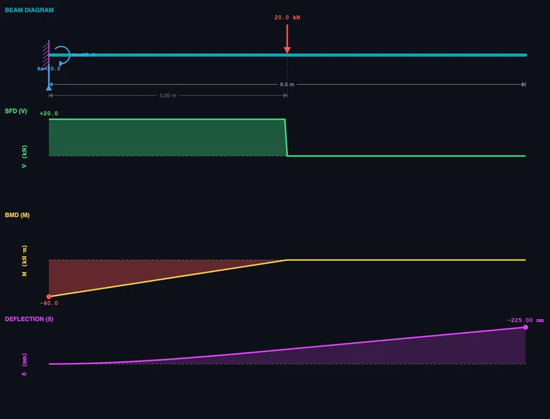

How to Draw Shear Force and Bending Moment Diagrams

- Draw the SFD and BMD in four steps: find support reactions (ΣFy = 0, ΣM = 0), build the shear diagram left-to-right (shear jumps at loads), build the moment diagram as the cumulative area under the SFD, then locate Mmax where the shear crosses zero.
- The maximum bending moment is Mmax = PL/4 for a simply supported beam with a central point load, and Mmax = PL for a cantilever with an end load — four times larger for the same load and span.
- The bending moment is always zero at a free end and at a simply supported end, and Mmax occurs at the zero-shear crossing, which is the beam's critical design section.
Shear force and bending moment diagrams have a reputation for being confusing. Students draw them wrong in exams, struggle to explain the shapes, and sometimes finish an entire Strength of Materials module still unsure what the diagram is actually telling them about the beam. Most of the time, the problem isn't the theory. It's the lack of visual feedback during learning.
When you draw a shear force and bending moment diagram by hand, everything is static. You can't see how the SFD changes if you shift the load slightly, add a second one, or switch from a simply supported beam to a cantilever. The beam bending simulator on NHIT VisualLab does exactly that — real-time SFD, BMD, and deflection curves that update the instant you change anything on the beam. Free, browser-based, no installation.
Why SFD and BMD Feel Harder Than They Are
Here's something I've noticed after years of teaching Strength of Materials: students can usually follow the procedure step by step. They can calculate reactions. They know shear jumps at load points. What trips them up is the mental model — the feeling of what the diagram means, not just how to produce it.
Ask a student to draw an SFD for a simply supported beam with a 20 kN central point load on a 6 m span. Most will get it right the first time: RA = RB = 10 kN, shear of +10 kN from left to midspan, then −10 kN from midspan to right. Then ask them what happens if the load moves 1 m to the right. Half will pause and rework the whole thing from scratch. They've learned the steps. They haven't built the intuition.
That's the gap simulation closes. Move the load in the browser. Watch the SFD reshape in real time. Do it ten times and the mental model builds itself — through interaction, not memorisation. Five whiteboard examples can't do what five minutes of dragging a load across a beam can do.
Three Beam Types, Three Very Different Behaviour Patterns
The simulator supports three beam configurations. Each behaves differently under the same load, and understanding why is the actual goal of the module — not just producing the right diagram shape, but knowing why the shape is what it is.
Simply supported beam — pinned at both ends, free to rotate. Apply a central point load P on span L: reactions split equally, RA = RB = P/2. The SFD is symmetric — rectangular steps either side of the load. The BMD is triangular, peaking at midspan:
\[M_{\max} = \dfrac{PL}{4}\]
Cantilever beam — fixed at one end, completely free at the other. The wall must supply both a vertical reaction equal to P and a moment reaction equal to PL. The SFD is constant along the full length. The BMD is a straight line that starts at zero at the free end and rises linearly to its maximum at the fixed support:
\[M_{\max} = PL\]
Same load. Same span. The cantilever's maximum bending moment is four times larger than the simply supported beam's. Students who see this comparison visually — side by side in the simulator — remember it. Those who only read both formulas on the same page often don't.
Overhanging beam — the beam extends beyond one or both supports. This introduces something neither of the other types has: a point of contraflexure — the location where the bending moment changes sign, from sagging to hogging. At that point the moment is zero, and the BMD crosses the axis. In the simulator you can drag the support positions and watch the contraflexure point move in real time.

The Four-Step Process for Drawing SFD and BMD
The method is consistent regardless of beam type or loading combination. Follow these steps in order:
- Calculate the support reactions. Draw the free-body diagram of the entire beam. Apply two equilibrium equations: ΣFy = 0 (sum of vertical forces) and ΣM = 0 (take moments about one support). This gives RA and RB for simply supported and overhanging beams, or RA and MA for cantilevers.
- Build the SFD from left to right. Start at zero. At each upward reaction the shear jumps up by that amount. At each downward point load it drops. Between loads the shear is constant (for point loads) or changes linearly (under a UDL, the shear decreases at the rate of the distributed load intensity w per unit length). The diagram must close back to zero at the right end.
- Build the BMD from the SFD. The bending moment at any section equals the cumulative area under the SFD from the left end to that section. Where the SFD is constant, the BMD is linear. Where the SFD is linear (under a UDL), the BMD is parabolic. The bending moment is always zero at a simply supported end and at a free end.
- Locate Mmax at the zero-shear crossing. The maximum bending moment occurs where the shear force is zero (or changes sign). That is your critical section — the highest stress point in the beam, and the governing section for structural design.
The simulator executes all four steps automatically and displays the results in the SFD (green) and BMD (gold) panels. Use it to verify hand calculations: work the problem on paper first, then load the same scenario in the browser. Any disagreement between your answer and the readout cards tells you exactly which step to revisit.
What the Deflection Curve Adds to the Picture
The SFD and BMD get most of the attention in structural analysis modules. But the deflection curve — the purple line in the simulator — is what actually governs many real engineering designs. A beam can be strong enough to resist the bending moment and still deflect so much it becomes unusable. Floor joists, bridge girders, and machine frames all carry deflection limits that are often tighter than the strength requirements.
For a simply supported beam with a central point load P on span L:
\[\delta_{\max} = \dfrac{PL^3}{48EI}\]
For a cantilever with an end point load P on span L:
\[\delta_{\max} = \dfrac{PL^3}{3EI}\]
Notice the L³ term. Deflection is brutally sensitive to span. Double the beam length and deflection increases by a factor of eight. This is why long-span structures use deep sections (high I) or high-modulus materials (high E) — not necessarily stronger materials, but stiffer ones.
Switch the beam type in the simulator from simply supported to cantilever with identical load and span. The maximum deflection jumps by a factor of 16. That comparison — one click, immediately visible — takes ten seconds to show and several minutes to explain on a whiteboard. Students consistently find the visual more convincing than the algebraic argument.
How to Use the Simulator in Class and for Revision
There are a few approaches that work well — both for teaching diploma-level structural analysis and for independent student revision.
Start with the presets. The simulator includes four built-in scenarios: Central Point Load, Quarter Load, Full UDL, and Combined Loading (point load + UDL together). These cover the most common exam configurations. Use the Combined Loading preset in class and ask students to predict where Mmax occurs before revealing the BMD. Most will guess the wrong location — which is exactly the right starting point for a discussion about why the zero-shear crossing rule matters.
Run the beam-type comparison. Select Central Point Load on a simply supported beam. Read the Max BM card. Switch to Cantilever. Read it again. The four-to-one ratio is hard to miss and easy to remember. Then ask: which beam type is more efficient for the same material? That question leads directly into the purpose of choosing support conditions in structural design.
Toggle diagrams one at a time. Use the SFD, BMD, and Defl toggle buttons to show or hide individual diagrams. Showing only the SFD first, then revealing the BMD, mirrors the hand-drawing sequence — and helps students see the relationship between the two rather than treating them as separate things to memorise.
Practice mode for exam preparation. Once the concepts are clear, Practice mode generates randomised beam problems with specific load magnitudes and positions and asks for numerical answers in kN and kN·m. Quiz mode scores five questions and rates performance with a star rating. These modes are where the understanding becomes automatic — the difference between knowing how to draw a diagram and being able to produce it quickly under exam conditions.
For a broader view of how virtual simulators support engineering education — and why the same principle applies to measurement skills as much as structural analysis — see our article on virtual measuring instruments for engineering students.
Try It Yourself
All tools below are free — no account, no download. Open them in a browser and start experimenting.
Key Takeaways
- The SFD shows internal shear force at every section; the BMD shows internal bending moment. The BMD is the cumulative area under the SFD.
- Maximum bending moment occurs where shear force crosses zero — always find this point before calculating bending stress.
- A cantilever has Mmax = PL vs. PL/4 for a simply supported beam — four times larger for the same load and span.
- Deflection scales with L³, making span the dominant variable in serviceability design, not just load or material strength.
- The four-step procedure (reactions → SFD → BMD → Mmax) is universal across beam types and load combinations.
- The NHIT VisualLab beam bending tool supports point loads, UDL, and moment loads on simply supported, cantilever, and overhanging beams — free, in a browser, with undo/redo and SI/Imperial units.
Frequently Asked Questions
How do you draw a shear force diagram for a simply supported beam?
Calculate support reactions first using ΣFy = 0 and ΣM = 0. Then start at zero on the left and move across the beam: shear jumps up at upward reactions, drops at downward loads, stays constant between point loads, and changes linearly under a UDL. The diagram must close to zero at the right end.
What is the maximum bending moment for a simply supported beam with a central point load?
Mmax = PL/4, where P is the load and L is the span. It occurs at midspan. For a 20 kN load on a 6 m beam: Mmax = (20 × 6)/4 = 30 kN·m. A cantilever with the same load and span has Mmax = PL = 120 kN·m — four times larger.
What is the difference between an SFD and a BMD?
The SFD shows internal shear force at every cross-section along the beam. The BMD shows internal bending moment. They're connected: the bending moment at any section equals the cumulative area under the SFD from the left end to that section. Where the SFD is constant, the BMD is linear. Where the SFD is linear (under a UDL), the BMD is parabolic.
How do you find the point of maximum bending moment?
The maximum bending moment occurs where the shear force diagram crosses zero (changes sign). Locate that point on the SFD, then calculate the bending moment as the total area under the SFD from the left support to that point. For a simply supported beam with a central load, that point is at midspan where the shear transitions from positive to negative.
SFD and BMD are not as abstract as they first appear. They're a language for describing what a beam is feeling internally under load — where it's being cut, where it's being bent, and by how much. Once that language clicks, structural analysis gets a lot less mysterious.
The simulator accelerates that moment of understanding. If you're a student, load it up before your next written exercise. If you're teaching, put it on the projector and let students drive. The beam bending simulator is free and ready when you are.